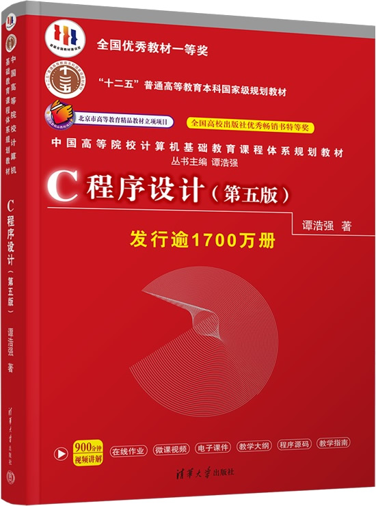

首页 > 书籍下载
《C程序设计(第五版)》谭浩强PDF下载（高清完整版）
|  | 作者：谭浩强 |
| 出版时间：2017年08月01日 | |
| 出版社：清华大学出版社 | |
| 书号ISBN：9787302481447 | |
| 总页数：370 | |
| 总字数：60.3W |
这是一本非常经典的 C 语言书籍，很多大学把它作为课堂教程，已经累计发行了 1400W 册，是公认的用来学习 C 语言的好书。
这里提供的是《C程序设计(第五版)》谭浩强的高清 PDF 下载，内容完整，附带目录标签。
这本书经过了近 30 年不断的更新、迭代，内容全面且容易理解，目前最新版本是第五版，遵循的是 C99 标准。自出版之日起，这本书获得了多项殊荣，比如：
- 全国高校出版社优秀畅销书特等奖；
- 原电子工业部优秀教材一等奖；
- 全国高等院校计算机基础教育研究会优秀教材一等奖。
下面是一位读者对这本书的评价：
其实这本书是最适合初学者的。以前总有人喷谭浩强，但现在这本书是最新版的，很多以前的问题已经被修正了，这是国家指定的教材，要相信国家，他被指定是有原因的，确实是我看过这么多C语言教材中最易懂的。
一位给孩子买书的家长也给出了好评：谭老师的C语言书一直很经典，我上大学学了，让我孩子也继续学。
书籍目录
- 第1章 程序设计和C语言 1
- 1.1 什么是计算机程序 1
- 1.2 什么是计算机语言 1
- 1.3 C语言的发展及其特点 3
- 1.4 简单的C语言程序 5
- 1.5 运行C程序的步骤与方法 11
- 1.6 程序设计的任务 13
- 习题 14
- 第2章 算法——程序的灵魂 15
- 2.1 程序=算法 数据结构 15
- 2.2 什么是算法 16
- 2.3 简单的算法举例 17
- 2.4 算法的特性 20
- 2.5 怎样表示一个算法 21
- 2.6 结构化程序设计方法 33
- 习题 35
- 第3章 简单的C程序设计——顺序程序设计 37
- 3.1 顺序程序设计举例 37
- 3.2 数据的表现形式及其运算 39
- 3.3 运算符和表达式 51
- 3.4 C语句 56
- 3.5 数据的输入输出 64
- 习题 80
- 第4章 选择结构程序设计 83
- 4.1 选择结构和条件判断 83
- 4.2 用if语句实现选择结构 85
- 4.3 关系运算符和关系表达式 89
- 4.4 逻辑运算符和逻辑表达式 90
- 4.5 条件运算符和条件表达式 94
- 4.6 选择结构的嵌套 96
- 4.7 用switch语句实现多分支选择结构 99
- 4.8 选择结构程序综合举例 102
- 习题 107
- 第5章 循环结构程序设计 110
- 5.1 为什么需要循环控制 110
- 5.2 用while语句实现循环 111
- 5.3 用do…while语句实现循环 113
- 5.4 用for 语句实现循环 116
- 5.5 循环的嵌套 120
- 5.6 几种循环的比较 121
- 5.7 改变循环执行的状态 121
- 5.8 循环程序举例 127
- 习题 137
- 第6章 利用数组处理批量数据 139
- 6.1 怎样定义和引用一维数组 139
- 6.2 怎样定义和引用二维数组 145
- 6.3 字符数组 151
- 习题 165
- 第7章 用函数实现模块化程序设计 167
- 7.1 为什么要用函数 167
- 7.2 怎样定义函数 169
- 7.3 调用函数 171
- 7.4 对被调用函数的声明和函数原型 176
- 7.5 函数的嵌套调用 179
- 7.6 函数的递归调用 181
- 7.7 数组作为函数参数 189
- 7.8 局部变量和全局变量 196
- 7.9 变量的存储方式和生存期 201
- 7.10 关于变量的声明和定义 211
- 7.11 内部函数和外部函数 212
- 习题 215
- 第8章 善于利用指针 217
- 8.1 指针是什么 217
- 8.2 指针变量 219
- 8.3 通过指针引用数组 229
- 8.4 通过指针引用字符串 254
- 8.5 指向函数的指针 265
- 8.6 返回指针值的函数 273
- 8.7 指针数组和多重指针 276
- 8.8 动态内存分配与指向它的指针变量 284
- 8.9 有关指针的小结 288
- 习题 291
- 第9章 用户自己建立数据类型 293
- 9.1 定义和使用结构体变量 293
- 9.2 使用结构体数组 300
- 9.3 结构体指针 303
- 9.4 用指针处理链表 309
- 9.5 共用体类型 317
- 9.6 使用枚举类型 322
- 9.7 用typedef声明新类型名 326
- 习题 330
- 第10章 对文件的输入输出 331
- 10.1 C文件的有关基本知识 331
- 10.2 打开与关闭文件 334
- 10.3 顺序读写数据文件 338
- 10.4 随机读写数据文件 350
- 10.5 文件读写的出错检测 355
- 习题 355
- 附录 357
- 附录A 常用字符与ASCII代码对照表 357
- 附录B C语言中的关键字 358
- 附录C 运算符和结合性 359
- 附录D C语言常用语法提要 361
- 附录E C库函数 365
书籍下载
一键登录，免费下载完整版 PDF，文件名称：《C程序设计(第五版)》谭浩强.pdf